/*-----------------------------*/
📅 2021-08-19
🔄 2021-08-19
⌚ Reading time: 1 min
📂
各种现代控制方法层出不穷，但是PID万古长青。纵使你理论发展又快又好，工业上还是PID占据了大半江山。没事整整PID还是挺有用的。
这里用倒立摆作为仿真对象，对各种花式PID的控制效果进行比较。通过对倒立摆这一典型的非线性系统的控制，可以检验各种PID控制方法是否有较强的处理非线性和不稳定性问题的能力。
常用的机器人仿真工具有Gazebo、Webots、MATLAB等，这里使用到的是MATLAB中的Simscape Multibody模块，MATLAB版本为2019b。Simscape 是 Simulink 的一个模块，而 Simscape Multibody 又是 Simscape 的一个模块。这个模块是一个多体机构仿真环境，提供了几何体、关节、约束、施力单元以及传感器等大量的组件，这使得在MATLAB中搭建一个机构仿真框图十分容易，同时模块集成了3D可视化组件，这使得仿真结果更为直观。
搭建一个倒立摆的模型，
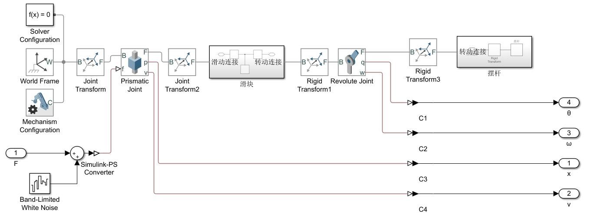
设置好各种物理参数，输出4个传感器数据作为反馈参数（不一定都要用到，先留着），打包成一个subsystem。直接启动仿真，可以看到在没有外力所用下，只要有轻微干扰，倒立摆就直接倒了。
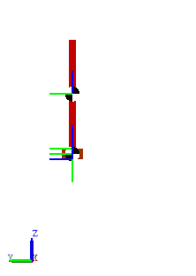
然后把摆杆角度作为反馈，直立状态作为给定计算得到偏差，把摆杆初始角度调成左偏30°，然后随便整两个PD参数，基本上就能立起来了。
系统结构是下面这个样子，这个结构就代表了很大一类的简单控制系统，比如温度控制、液位控制等。
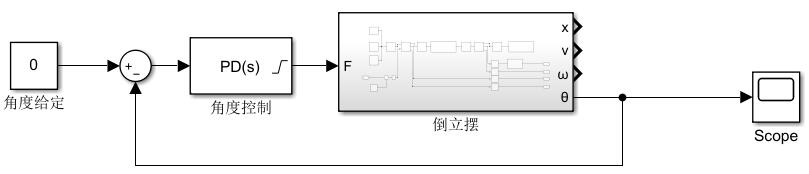
控制效果
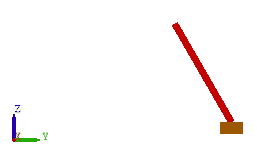
当然也可以加上位置控制，看起来更像比较厉害的控制理论。要做的就是在角度控制的基础上串上个位置控制
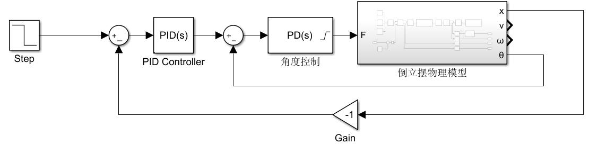
对于一个阶跃信号的控制效果
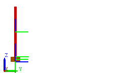
由此可以看出，PID是个好东西。倒立摆其实并没这么简单，是个挺复杂的小东西，但是在使用PID的时候，完全没考虑其数学模型的问题，就直接让他立了起来，甚至效果还不错。PID让即使是不懂控制控制理论的人也可以随便试几个参数达到这个效果，所以PID的广泛应用也是情理之中的。当然网上讲PID的直观理解的人很多，开车的、倒水的、烧火炉的故事都有人讲过，这些故事对PID的直观理解也有很大帮助。当然PID的在数学上的作用机理没这么好理解，搞控制理论的人总是执着的用数学手段严格证明一个系统的稳定性，关于控制背后的数学原理，后面有空再写写。
再加点程序控制手段，用$\theta$和$\dot \theta$这两个参数模仿人把摆甩起来，然后偏差小到一定范围内切换角度+位置闭环控制，控制结构图如下图：
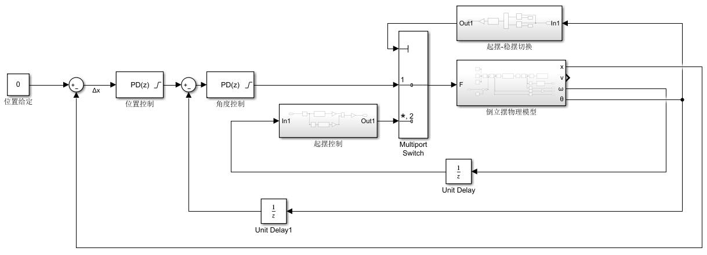
控制效果
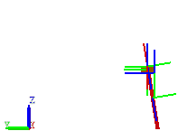
这个启动控制看起来相当厉害，但是控制手段却是最没牌面的，坦率的讲没有用到任何控制算法，这只能叫控制方法，就是个开环盲甩，实际情况下抗干扰能力太差，随便什么参数变一下后果直接不可预测，当然这里启动不是重点，相关方法也有很多比如bangbang控制、能量反馈控制，这些都是有反馈即自动控制的核心思想在里面的。
到这里一切只是个开始，在比较早的年代，有用纯硬件搭的PID控制电路，随着嵌入式与微电子的发展，数字控制逐渐取代了模拟控制，越来越多的改进PID方法诞生了，这些改进的PID控制方法使得经久不衰的PID再次焕发了生机，这也是本文想学习仿真的东西。
只试两个参数感觉还是差了点意思，毕竟不学控制理论的朋友稍微试试也能到这个效果，还是要理论分析一下才显得像是个学过理论的人。
理论分析的第一步就是把这个物理的东西先变成数学上的一个式子，俗称数学建模。众所周知，经典控制理论分析的是线性定常微分方程，这个倒立摆输入是力，把摆杆偏角认为是输出，那么正好凑凑能搞出的微分方程，这样就可以进一步分析了。
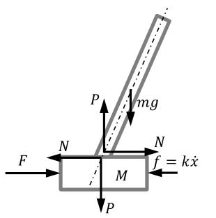
$$ F(t) = M \ddot{x}(t) + m [ \ddot{x}(t) + ] $$
然后工作点附近线性化一下，有了线性定常微分方程了：
$$ \left[ ml - J\left(\frac{M}{m} + 1\right) \right] \ddot\theta(t) + (M+m)g\theta = f(t)$$
然后呢，传递函数就有了，这时候，零极点、根轨迹、波特图各种分析手段都可以使用了，各种校正手段都可以用在这个微分方程上。
如果想更先进一点，可以使用状态空间来描述这个事情。
（有时间一定补充）
模型
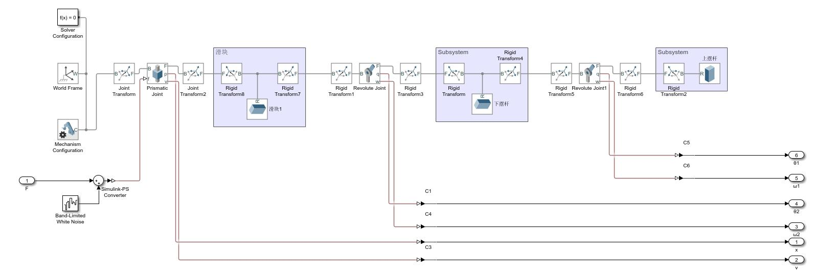
不加外力
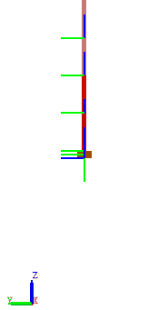
并联PD，一般单入单出的控制，不能这么搞的，😂，这个东西不一样，本质上是状态反馈，用极点配置法求出6个反馈参数，所以看起来是并联PD，但是本质是状态反馈。
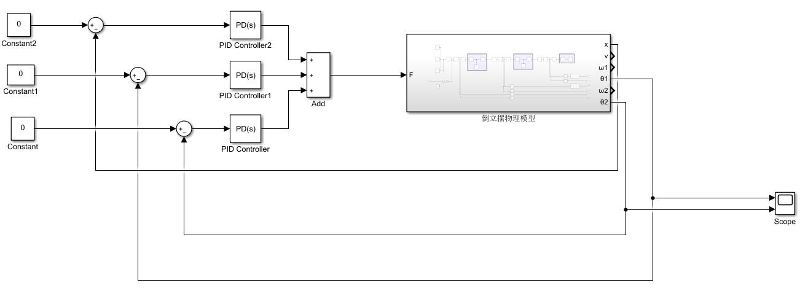
来个初始小偏差，看看效果
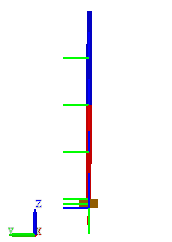
能立起来了。